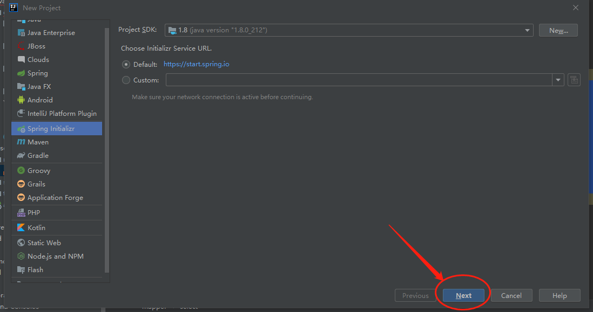
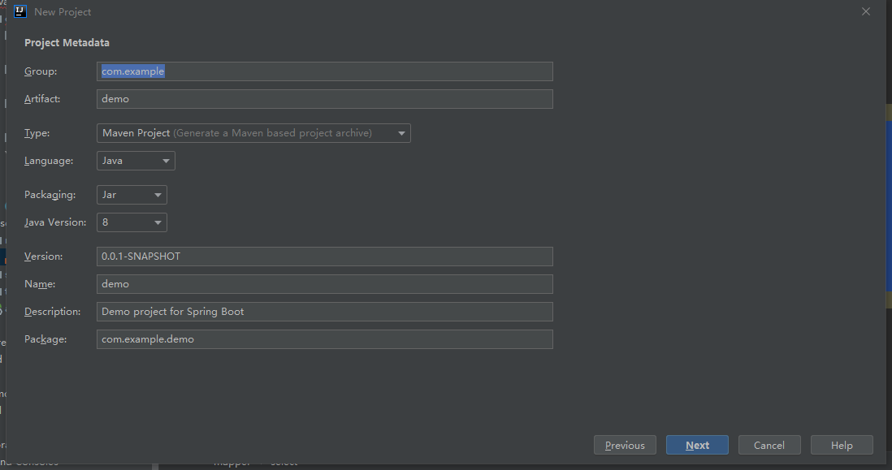
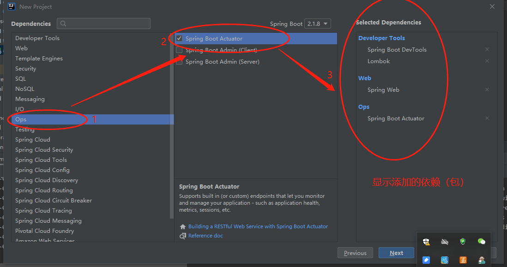
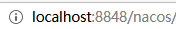
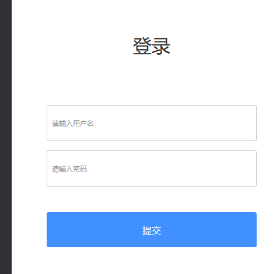
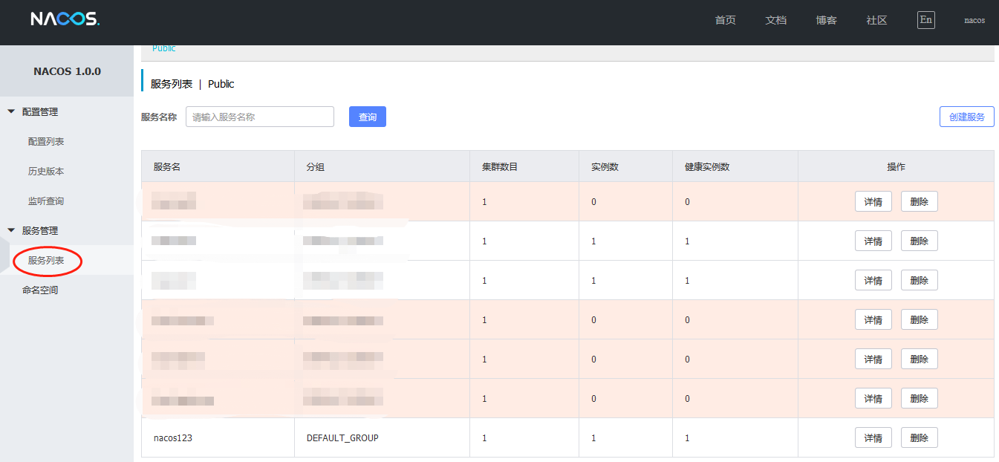
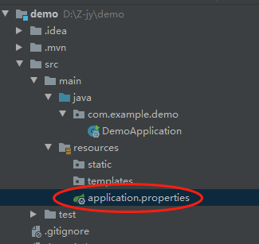
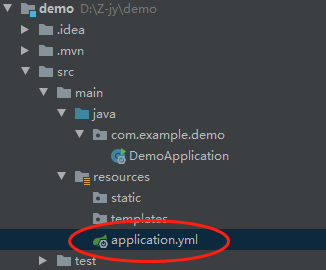

刚刚开始写微服务，这篇博客就纪念我第一个微服务吧。
1.新建工程
首先要搭建一个微服务环境，我用的是开发环境IDEA，详细步骤如下：
①打开IDEA
File->New->Project 选择Spring lnitializr 然后点击next。

填写包名和项目名字，自己随便写，然后next。

进入选库环节，也就是选择自己需要的Maven依赖，项目建好后，这些依赖在pom中自动生成，不用我们去手动添加了，我们项目比较简单，加几个基本库就行了，点击next。

最后点击Finish，一个微服务项目搭建就算初步完成了。
2、注册到注册中心
微服务当然要注册到注册中心啦，不然就不是微服务了。我用的注册中心是Nacos，是阿里开源的，当下比较流行。（如果不懂Nacos的，建议先学一些Nacos）
先启动Nacos，在本地打开Nacos，localhost：8848/nacos，会出现登录界面，账号密码都是nacos


登录进去之后

选择服务列表，可以看到我们的注册进来的微服务，如果微服务启动了，就是三个1，没启动后面就是0.
接下来，我说一下如何注册微服务。
把resources下的application.properties删了，在同样的位置间一个application.yml文件
 
打开application.yml ，写上下面这段代码
server:
port: 8080
spring:
application:
name: nacos123
cloud:
nacos:
discovery:
server-addr: localhost:8848
在pom中添加nacos的依赖
下面这段代码添加到<dependencies></dependencies>之间
<dependency>
<groupId>org.springframework.cloud</groupId>
<artifactId>spring-cloud-starter-alibaba-nacos-discovery</artifactId>
</dependency>
下面这段添加到<project></project>之间
<dependencyManagement>
<dependencies>
<dependency>
<groupId>org.springframework.cloud</groupId>
<artifactId>spring-cloud-alibaba-dependencies</artifactId>
<version>0.9.0.RELEASE</version>
<type>pom</type>
<scope>import</scope>
</dependency>
<dependency>
<groupId>org.springframework.cloud</groupId>
<artifactId>spring-cloud-dependencies</artifactId>
<version>Greenwich.SR2</version>
<type>pom</type>
<scope>import</scope>
</dependency>
</dependencies>
</dependencyManagement>
这样运行主类就可以注册到nacos上了，一个基本的微服务就做好了。
有什么问题可以留言交流，大家一起讨论哈！